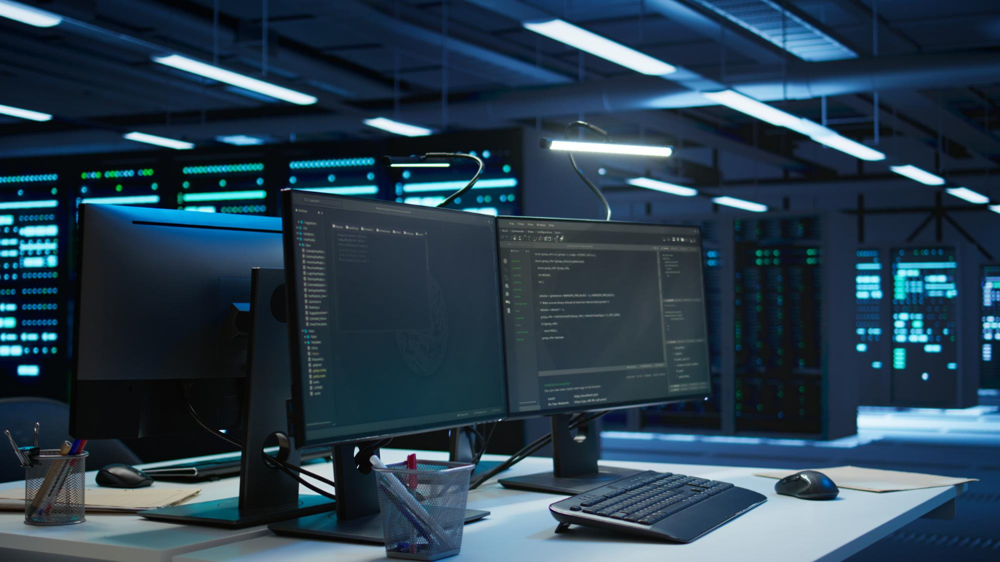

Projets techniques
De la segmentation réseau à la mise en place de serveurs virtualisés sécurisés.
Voir les projetsMa Vision du Métier
L'informatique est bien plus qu'un simple métier : c'est l'avenir au cœur de la souveraineté numérique. Dans un secteur en évolution constante, on s’ouvre les portes d’un domaine en constante évolution où la créativité rencontre la technologie.

Ma Motivation
Choisir l’informatique, c’est s’ouvrir les portes d’un domaine en constante évolution où la créativité rencontre la technologie. Ce secteur offre une grande diversité de carrières, de l'administration système et réseau, au développement logiciel et à la cybersécurité, en passant par l’intelligence artificielle et garantit des opportunités professionnelles solides grâce à une forte demande de talents.
Travailler dans l’informatique permet aussi de résoudre des problèmes concrets, d’innover et de contribuer à des projets qui transforment notre quotidien. Pour moi, c'est le choix idéal car j'aime apprendre en continu, relever des défis techniques complexes et participer activement à la construction du monde numérique de demain.
Le SISR, plus spécifiquement, me permet d'être le garant de cette infrastructure : celui qui rend possible cette transformation en assurant la disponibilité, la sécurité et la performance des services.
Structure du portfolio
Découvrez comment j'applique concrètement mes compétences sur le terrain.
De la segmentation réseau à la mise en place de serveurs virtualisés sécurisés.
Voir les projetsImmersion en entreprise : administration hybride et support utilisateur.
Découvrir le stageMa cartographie technique et mes méthodes pour rester à la pointe du SISR.
Voir les compétencesContactez-moi pour obtenir davantage de détails techniques ou les livrables complets.